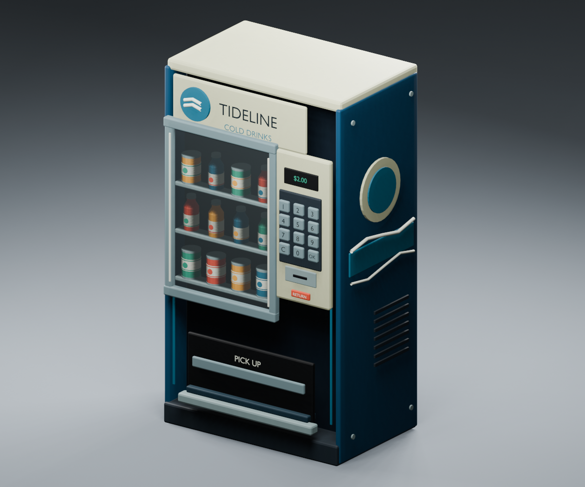
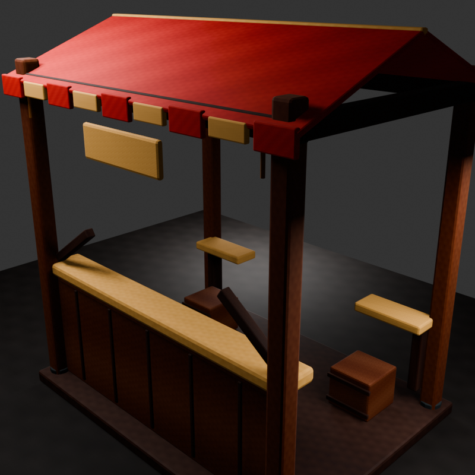
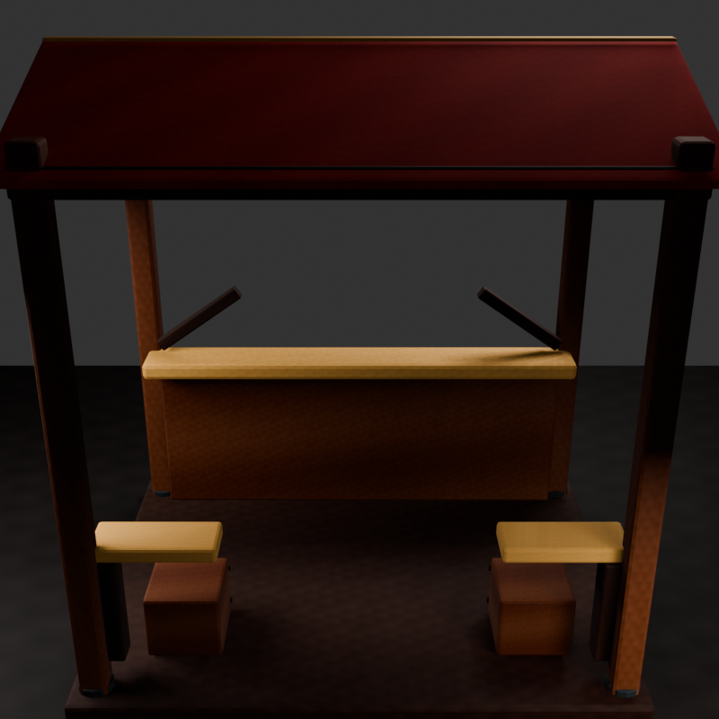
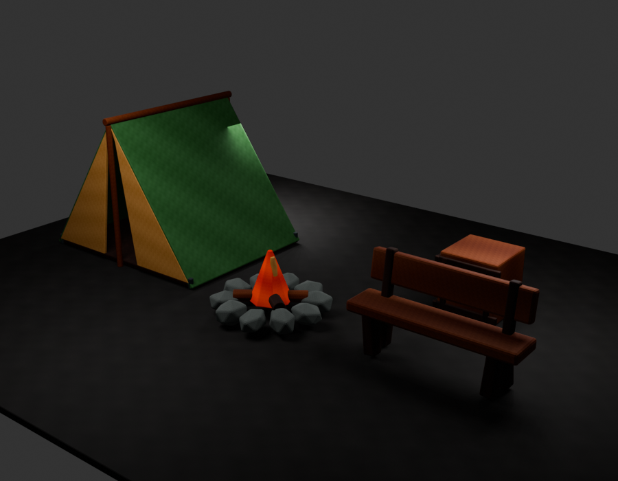
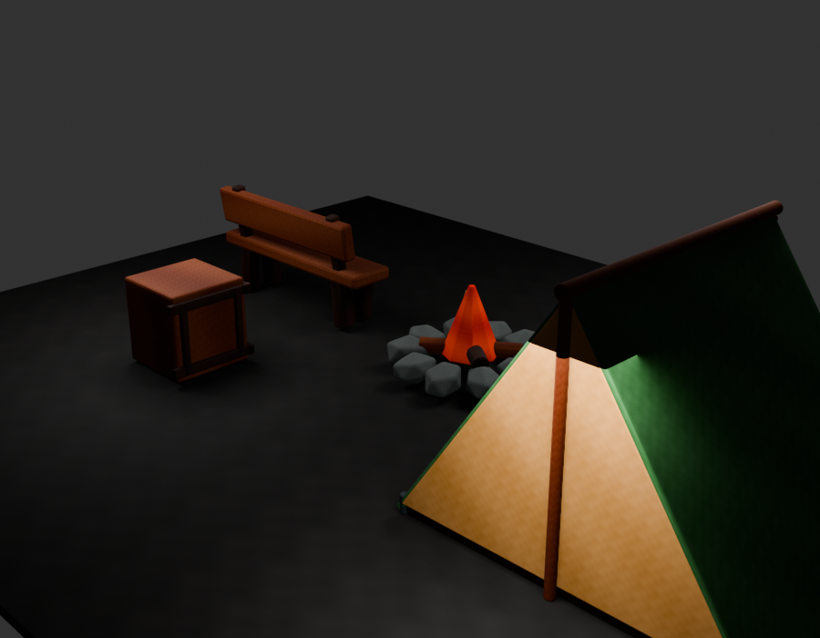
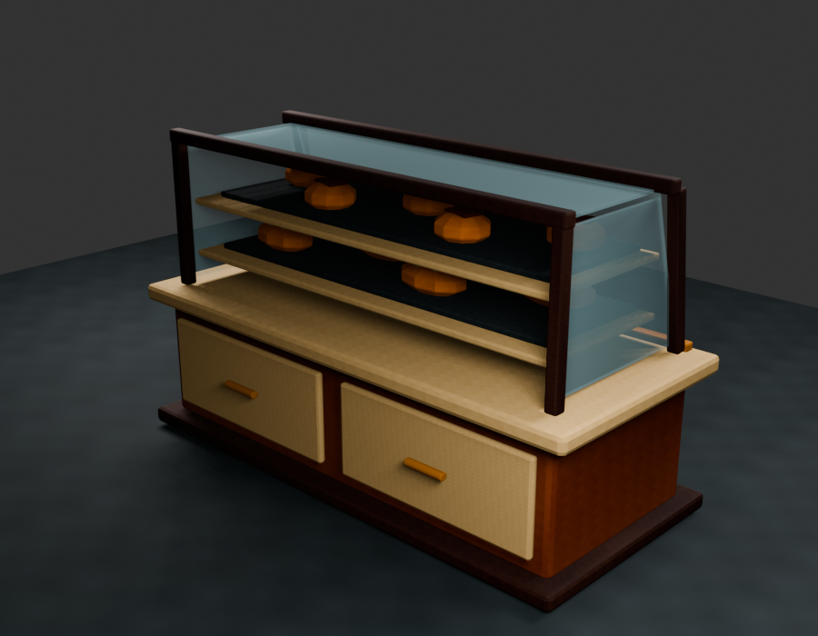
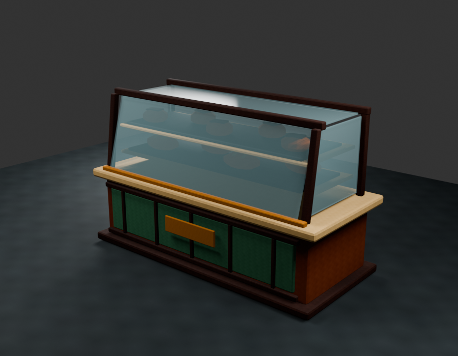
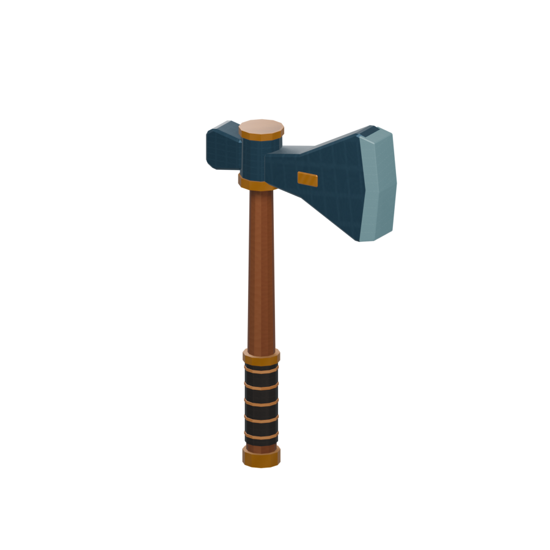
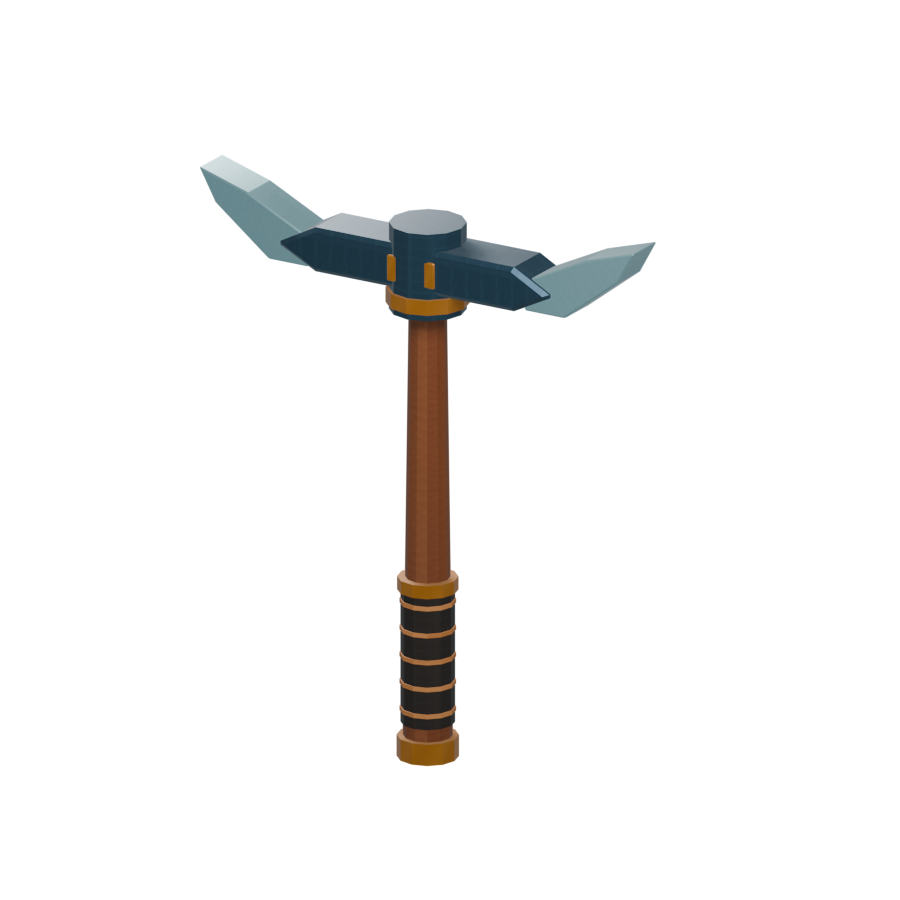

3D model studies
Stylized props, fixtures, and small environment pieces shown as Blender previews.
Self-directed work. These models began as Roblox asset studies; setup for other game engines would be scoped and checked for each project.
Tideline vending machine
Self-directed · Blender preview
Static stylized drink machine with a recessed display of cans and bottles, a keypad, and a pickup area. The latest version has not been checked in Roblox Studio.

Market stall
Self-directed · Blender preview
Open-sided wooden stall with a striped canopy, service counter, shelves, and rear access.


Campsite props
Self-directed · Blender preview
Matching tent, campfire, bench, and supply crate modeled as a small environment set.


Bakery display counter
Self-directed · Blender preview
Glass-front counter with stocked shelves and staff-side storage. Its appearance in a game engine remains to be checked.


Axe and pickaxe
Self-directed · Static models
A small pair of stylized hand-tool models with wood handles and metal heads. No animation or gameplay behavior is included.


What I offer
Small static 3D props, fixtures, and environment pieces. We can agree on style references, dimensions, target platform, file format, textures, price, timing, and revisions before work begins.
For Roblox Studio examples, see the Roblox assets portfolio.
Contact
Contact me through my itch.io for-hire post.
Send a reference or description, intended size, target engine, preferred file format, and budget.